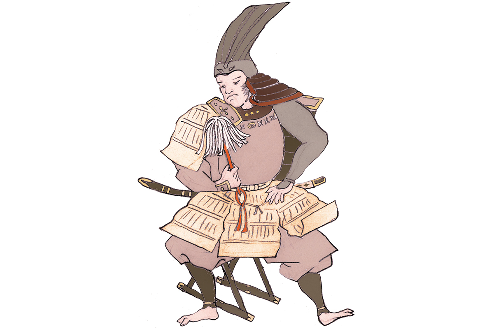
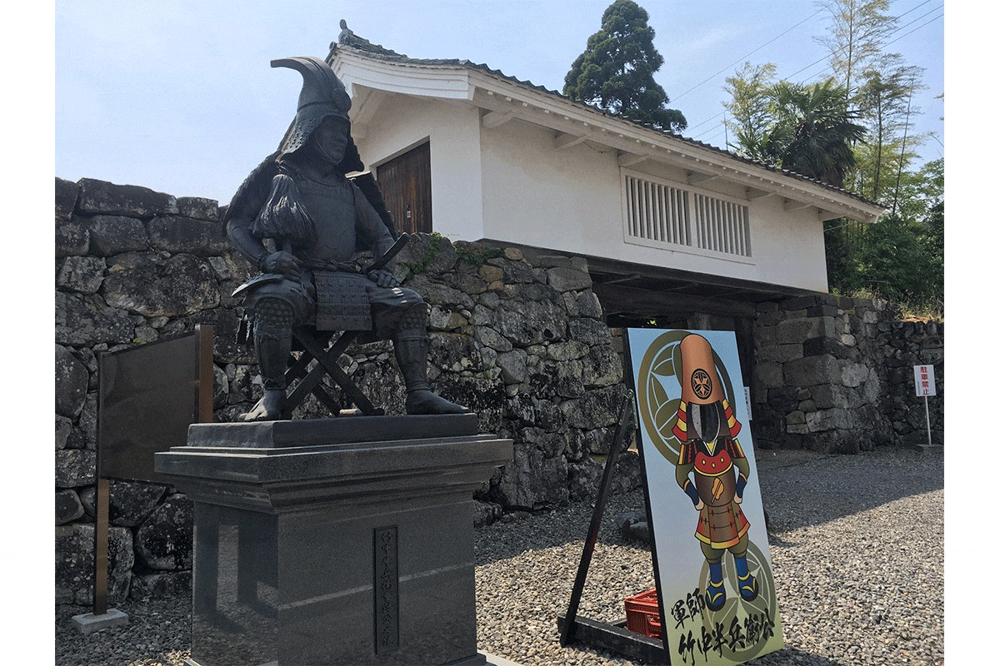

Префектура Гифу · Таруи · история
Хамбэй Такэнака: хрупкий стратег из Мино, на чьи советы опирался молодой Хидэёси

С конца XV до конца XVI века Япония жила в непрерывных войнах, и от той эпохи осталось много полководцев, о которых рассказывают до сих пор. Хамбэй Такэнака из провинции Мино, нынешней южной части префектуры Гифу, прославился не силой, а умом: он был одним из главных советников Хидэёси Тоётоми в годы его восхождения.
Эпоха
Время сражающихся провинций
В конце XV века власть сёгуната Муромати окончательно рухнула, и место прежних наместников по всей стране заняли местные военные правители. Почти сто лет они воевали друг с другом за земли и влияние. Этот век японцы называют эпохой Сэнгоку, «эпохой воюющих провинций», и именно он дал больше всего полководцев, ставших героями легенд, книг и сериалов.
Хамбэй Такэнака прожил с 1544 по 1579 год. Настоящее его имя Сигэхару, а в молодости его звали Сигэтора. Он родился в провинции Мино, в самурайском роду Такэнака, и взял в жёны дочь самурая из рода Андо.
Судьба
Гений-стратег на службе у Хидэёси
Славу гениального военного советника Хамбэю принесла «Тайкоки», жизнеописание Хидэёси Тоётоми (1537–1598), составленное уже в эпоху Эдо. Хидэёси начинал простым пехотинцем у Нобунаги Оды (1534–1582), сильнейшего правителя той поры, а к концу XVI века объединил Японию. В его войске Хамбэй был одной из главных фигур. Вместе с другим знаменитым советником Хидэёси, Камбэем Куродой (1546–1604), его ласково называют «Рёбэй», «два Бэя», по общему окончанию их имён.
Отец Хамбэя, как считается, служил роду Сайто, правившему Мино. В 1560 году Хамбэй унаследовал главенство в роду, получил замок Бодайсан и поступил на службу к Ёситацу Сайто (1527–1561), владетелю провинции. Когда Нобунага Ода пошёл войной на Мино, Хамбэй отбивал его атаки, и в 1563 году его тактика принесла роду Сайто победу над войском Оды. Но разгульная жизнь господина из рода Сайто, как рассказывают, всё больше вызывала у него отвращение.
В 1564 году Хамбэй всего с 16 спутниками (по другой версии, с 17) за один день захватил замок на горе Инаба, главную крепость рода Сайто. Позже на этом месте Нобунага устроил свою резиденцию, замок Гифу (о нём наша статья о замке Гифу и Суномате). После этого Хамбэй ушёл от Сайто и служил Нагамасе Адзаи (1545–1573), правителю северной части соседней провинции Оми.
Советник, который не боялся спорить
В 1567 году, после гибели рода Сайто, Хамбэй перешёл к Хидэёси, который тогда носил фамилию Хасиба, и сопровождал его в походе на Тюгоку, на запад острова Хонсю. С Хидэёси он говорил на равных и придирчиво указывал ему на мелочи. Для Хидэёси он был мозговым центром, помогавшим вести войну с умом.
В 1578 году Хамбэй без штурма, одними переговорами и интригами, заставил сдаться замок Хатимандзан рода Укита в провинции Бидзэн, и сам Нобунага его похвалил. В 1579 году, во время осады замка Мики в провинции Харима, Хамбэй умер от болезни.
При всём этом выглядел он совсем не как воин. По преданию, лицо у Хамбэя было тонкое, почти женское, а сложение хрупкое.
«Из-за хорошего коня порой теряешь доброе имя»
Хамбэй Такэнака
Этими словами продолжается его совет «дорогого коня покупать не стоит». Хамбэй ездил на невзрачной лошади, и когда Хидэёси спросил, почему, он ответил: на хорошем коне начинаешь жалеть коня и упускаешь удачный момент.
Где увидеть
Усадьба рода Такэнака в Таруи
Посёлок Таруи лежит на западе префектуры Гифу, по соседству с Сэкигахарой. Здесь в эпоху Эдо стояла укреплённая усадьба рода Такэнака, «дзинъя», которую построил сын Хамбэя.

Руины усадьбы рода Такэнака
- Адрес
- префектура Гифу, уезд Фува, Таруи, Иватэ, 614-1
- Телефон
- +81 584-23-2020 (туристический информационный центр Таруи)
- Цены / Вход
- бесплатно
- Как добраться
- около 8 минут на машине от станции Таруи линии JR Токайдо
- Сайт
- tarui-kanko.jp
Фото: Мария Араи (иллюстрация).